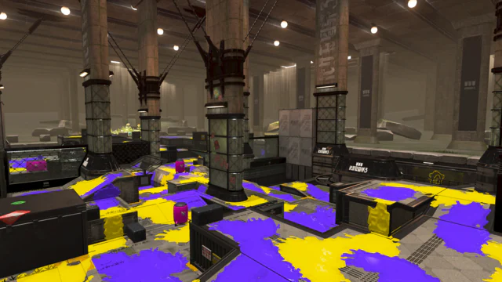

ステージ紹介
ここでは全24種類のステージの特徴について説明していくぞ!!
ゴンズイ地区
ゴンズイ地区は上エリアと下エリアがきれいに分かれており、
それぞれのエリアをしっかり制圧していくことで勝負を優位に進められる。
上エリアは撃ちおろしによって長射程武器がキルを取りやすいが、
高さがそこまでないため短射程武器でも下から迎撃可能。
ユノハナ大渓谷
ユノハナ大渓谷の中心には、ステージ中央一帯を全て見渡せる大きな高台が設置されている。
また、やや自陣側にも高台があるため、敵を抑える場面でも打開する場面でも長射程武器が活躍する。
チームに1人いると敵に圧力をかけやすいのでおすすめだ。
ナメロウ金属
ナメロウ金属は下層と上層に分かれており、広く塗れる下層中央を主に取り合うこととなる。
上層の一部は金網となっており、相手陣営に最短距離で攻め入るのはかなりリスキーな地形となっている。

ヤガラ市場
中央と左右の道の間に壁がある代わりに、左右の道は裏から中央に回ることができる。
中央の制圧と左右からの裏取り、両方を意識すべきステージだ。
マテガイ放水路
自陣側が広く中央を通るしか敵陣に行く方法が無いので、中央が激戦区となる。
クサヤ温泉
かなり狭いマップとなっており、塗れる場所が少ないのが特徴。
スペシャルも溜めにくく、両端が高所になっているため、長射程のブキが比較的強い。

ナンプラー遺跡
中央広場の制圧とエリアコントロールが勝利の鍵となる。
背の高い遮蔽物が少なく、視界が開けているため、
自身の周囲の警戒に加えて、味方周辺のカバーを意識して立ち回りたい。
中央広場を制圧して敵側の高台まで押せると試合を有利に進められる。

タラポートショッピングパーク
タラポートショッピングパークでは、中央広場の制圧とコントロールが勝利の鍵。
背の高い遮蔽物は無く、視界がひらけているため、
自身の周りの警戒に加えて味方へのカバーを意識して立ち回りたい。

タカアシ経済特区
タカアシ経済特区の高台には金網が多く張り巡らされているため、
上下による戦闘を意識して立ち回る必要がある。
ほとんどの高台がイカノボリできるため、
高台へのプレッシャーがけや裏取りがしやすいのも特徴。

オヒョウ海運
オヒョウ海運は自陣・中央・敵陣それぞれに高台があるのが特徴となっている。
チャージャーやスピナーなどの武器は高台からエリアを制圧しつつ、
短射程・中射程武器で地上戦を挑みに行くのが基本の立ち回りとなる。

バイガイ亭
『バイガイ亭』は上層と下層が特徴のステージ。
上層は中央部分で敵陣と地続きとなり、占領すれば有利に立ち回れる。
一方、下層は上層から狙われやすい分、上手く隠れれば、
敵側の背後から壁で中央高台に登ることができる。

カジキ空港
「カジキ空港」はプロペラを回すことで昇降や移動ができる地形が特徴的なステージ。
主戦場となる中央エリアには遮蔽物が少ないため、
激しい撃ち合いが行われる事が多いステージだ。
リュウグウターミナル
リュウグウターミナルには、ステージ中央の主戦場や自陣、敵陣に移動床が設置されている。
戦闘が発生しやすいエリアにもあり、移動床に当たると体も運ばれてしまうので、
移動床を気にしながら戦う必要がある。
マサバ海峡大橋
マサバ海峡大橋はステージの地形が非常に細長く、なおかつ高低差が少ないのが特徴。
また、通常の移動では裏取りできるルートがないため、
地形の特徴も相まってステージ中央で4vs4の戦闘が起きやすい。

マヒマヒリゾート＆スパ
マヒマヒリゾートは、各ルール毎に決まっている条件を満たすことで
ステージ全体の水位が下がって地形が変化する。
敵陣への入り方などが変化するので、水位下降前と後の立ち回りを覚えておこう。
キンメダイ美術館
自陣と敵陣に1つ、ステージ中央に1つの計3つの回転台が置いてあり、
回転周期によって、各陣へと繋がるようになっている。
回転台の形はルールによって変わり、ガチヤグラではヤグラの進行具合に合わせて回転する。
ヒラメが丘団地
ヒラメが丘団地は、高台が多く入り組んだ構造となっており、
高所エリアの制圧・コントロールが勝利の鍵。
どこからでも高所に上がれるように壁塗りはしっかりしておきたいところ。

ネギトロ炭鉱
『ネギトロ炭鉱』は中央が盆地となるステージ。
中央エリアにはスロープや遮蔽物である壁もあり、近接武器は混戦となりやすい。
盆地という地形特性から、高台から全体を見渡せるのも特徴だ。

スメーシーワールド
上層と下層に分かれており、全ステージ内の中でも特に広い。
射線が広く取れる高台が全く無いのも特徴的。
ザトウマーケット
ザトウマーケットは、自陣近くに高台が多く配置されているので、
他のマップと比べると防衛側が強い。
特に長射程武器との相性が良く、
射線が通る場所が多いので狙い撃ちに向いている。
チョウザメ造船
チョウザメ造船はステージ全体に高台が多いので、長射程武器が活躍しやすいステージだ。
特に、自陣高台はステージ中央一帯を全て見渡すことができるため強力。
長射程武器がチームに1人いると敵に圧力をかけやすいのでおすすめだ。
海女美術大学
海女美術大学は、敵陣に入る手段が少ないのが特徴。
他のマップに比べて押し込みがしにくいので、中央の制圧がどのルールでも必要となる。

マンタマリア号
マンタマリア号はステージ全体に上下差が多く、高低差を利用して戦うステージ。
特に中央のマストに登れば上からの攻撃ができ、制圧がしやすい。

コンブトラック
中央や中央付近の高台から見渡すと視界が開けてはいるが、
高低差や坂のせいで死角になる場所も多い。
有利なポジションを先に取ったら、どこに敵が隠れているか、
逆に敵から見えないポジションはどこかを把握して、一方的に撃たれないようにするのがポイント。